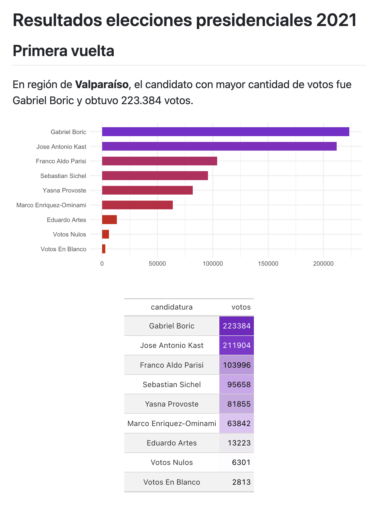
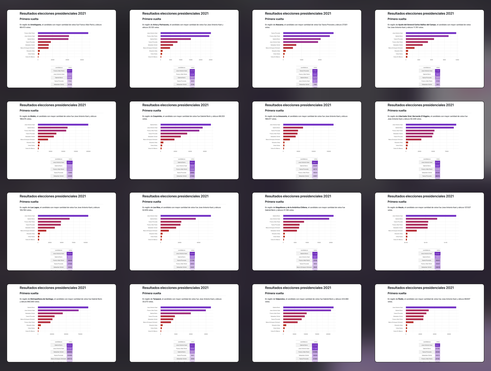

Automatiza la generación de reportes creando documentos parametrizados con Quarto y R
15/4/2025
En este tutorial aprenderemos a crear reportes parametrizados con Quarto. Un reporte parametrizado es un reporte diseñado para que el contenido, incluyendo textos, gráficos y más, cambien al modificar una variable en su encabezado. En este sentido, por parámetro nos referimos a un valor que podremos cambiar para alterar el resultado obtenido por un mismo reporte.
De esta manera, podemos generar múltiples versiones de un mismo reporte simplemente cambiando el parámetro, por ejemplo, para diseñar un reporte con datos para un país, en base a un conjuntos de datos de múltiples países, y luego obtener múltiples versiones del mismo reporte pero para distintos países. O generar un reporte con datos de un año específico, y luego generar versiones del mismo reporte para distintos años.
Si tengo un reporte donde los resultados dependen de un filtro en mis datos, definimos el valor de la variable a filtrar en el encabezado bajo la etiqueta params:
params:
especie: "virginica"
El código completo de un reporte parametrizado básico, que define una variable especie en el encabezado, sería así:
Luego, en el código del documento, puedo acceder al contenido de especie usando params$especie. La idea de un reporte parametrizado, entonces, es que sin tocar el código del documento, puedo cambiar el valor de la variable parametrizada desde el encabezado del reporte.
La idea de poder hacer esto es diseñar el reporte para producir resultados en base a la variable parametrizada, para que podamos obtener múltiples reportes solamente cambiando la variable parametrizada.* De este modo, podemos obtener el reporte desde un script distinto con la función quarto_render() del paquete {quarto}:
library(quarto)
quarto_render(
input = "iris_params.qmd",
execute_params = list(
especie = "setosa"
)
)
Así solamente se necesita cambiar especie para obtener un reporte en .html listo para presentar. En otras palabras, desde un script secundario, puedo controlar la renderización del reporte, y general múltiples copias cambiando en esta función generadora de reportes el valor de la variable parametrizado, sin tener que entrar en el reporte mismo y editarlo cada vez.
Esto podría servir para tener un script que, ejecutando varias veces la función quarto_render(), genere decenas de copias de mi reporte, pero mostrando versiones distintas o filtradas del mismo conjunto de datos.
El potencial de esto es que, más allá de facilitar la generación de múltiples versiones de un reporte, se pueden generar x cantidad de reportes de una vez por medio de una iteración o loop que pase por todos los valores de la variable que parametrizamos:
walk(c("virginica", "setosa", "versicolor"), ~{
quarto_render(
input = "iris_params.qmd",
output_file = paste0("iris_params_", .x, ".html"),
execute_params = list(
especie = .x
)
)
})
Hay que asegurarse de que los nombres de los reportes generados sean distintos, cambiándolos en output_file = paste0("iris_params_", .x, ".html") para que tengan en su nombre el valor del parámetro usado.
También hay que preocuparse de que los reportes sean autocontenidos conteniendo embed-resources: true en el encabezado.
De esta forma obtenemos tres reportes con el trabajo de haber diseñado sólo uno. Pero si nuestra variable de parametrización tiene 10 o 100 valores, habremos obtenido 10 o 100 reportes gratis!
Ejemplo práctico: reporte parametrizado de resultados electorales
Para dar un ejemplo de parametrización de reportes, crearemos un pequeño documento Quarto que carga datos de las elecciones presidenciales de 2021 y genera un reporte que muestra un gráfico, un texto redactado en base a los datos, y una tabla. Este documento estará parametrizado por la región del país de la cual se desean obtener los resultados.
params:
region_elegida: "Los Ríos"
Puedes descargar el documento Quarto en este enlace y ejecutarlo en tu propio computador, ya que los datos se descargan directamente desde el repositorio.
El código del documento Quarto es el siguiente:
Podemos renderizar el documento parametrizado directamente desde RStudio presionando Render, o bien, podemos generar el resultado usando la función quarto_render(), desde la cual se puede especificar también el parámetro; es decir, la región del país de la que queremos obtener un reporte:
# generar un solo reporte
quarto_render(input = "reporte_elecciones_params.qmd",
execute_params = list(region_elegida = "Valparaíso"))
El reporte resultante:
Con tan sólo cambiar el parámetro a una región distinta, como "Los Ríos", obtenemos instantáneamente un nuevo reporte basado en los datos de esta región:
Cómo en nuestros datos tenemos una variable que contiene todas las regiones del país, podemos introducir todos los nombres de las regiones a un loop para que se generen tantos reportes como regiones existen en los datos:
# cargar los datos para generar reportes en base a un parámetro que viene desde los datos
# datos <- readr::read_csv2("quarto_clases/reporte_parametrizado/datos/presidenciales_2021_region.csv")
datos <- readr::read_csv2("https://github.com/bastianolea/presidenciales_2021_chile/raw/main/datos_procesados/presidenciales_2021_region.csv")
# todos los valores de la variable parametrizada
regiones <- unique(datos$region)
library(purrr)
# loop con purrr que genere un documento por cada valor de la variable parametrizada
walk(regiones, ~{
quarto_render(input = "reporte_elecciones_params.qmd",
output_file = paste0("reporte_elecciones_", .x, ".html"),
execute_params = list(region_elegida = .x))
})
Con el código anterior obtuvimos 16 reportes, uno por cada región del país, con tan sólo haber diseñado un reporte!
